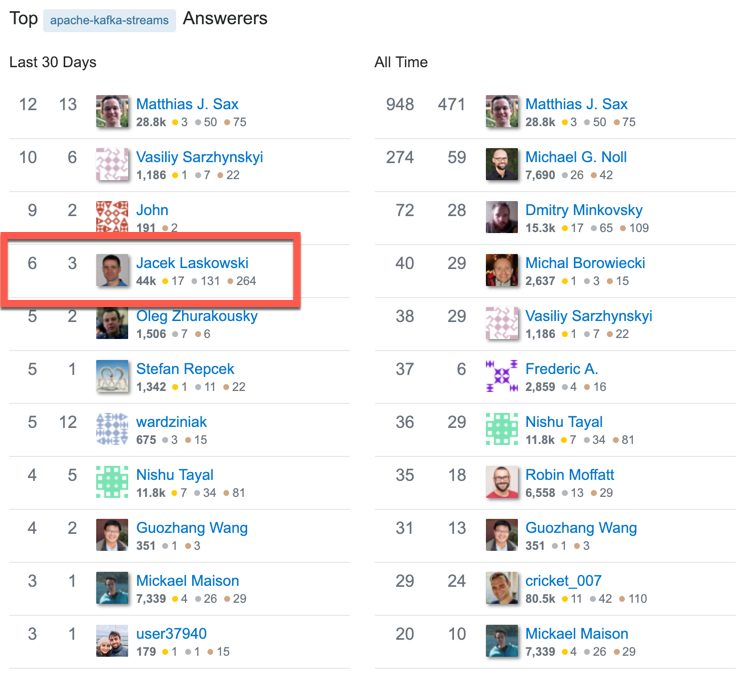

Apache Kafka™
and Kafka Streams
Workshop 2 Days
@jaceklaskowski / StackOverflow / GitHub / LinkedIn
The "Internals" Books: Apache Kafka • Kafka Streams
Jacek is active on StackOverflow
(Apache Kafka Streams)

Prerequisities
Be prepared to get the most out of the workshop
Prerequisities / Experience
- Some familiarity with messaging systems
- Experience with shell / command line
Prerequisities / To Be Installed
In-Class Preparations
Make Instructor's Life Slightly Easier. Thanks!
Introduce Yourself
- First name
- What's your experience with Kafka?
- Any production experience with Kafka?
- What do you expect from the workshop?